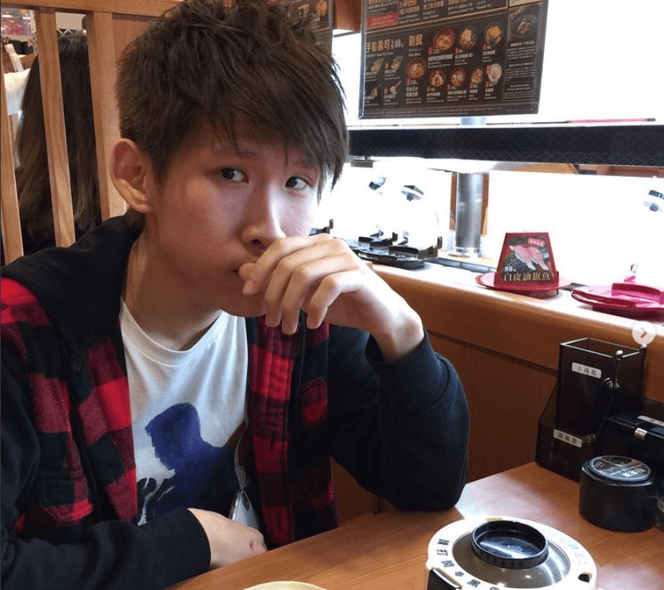

Ren-Si Lin
The Home Page
Hello I am Ren-Si (Jeff) Lin

"It`s always nice when Its nice" -Keanu Reeve
My Story:
I have a really complicated and weird education path
Listen to this chilling beats while browsing my bios